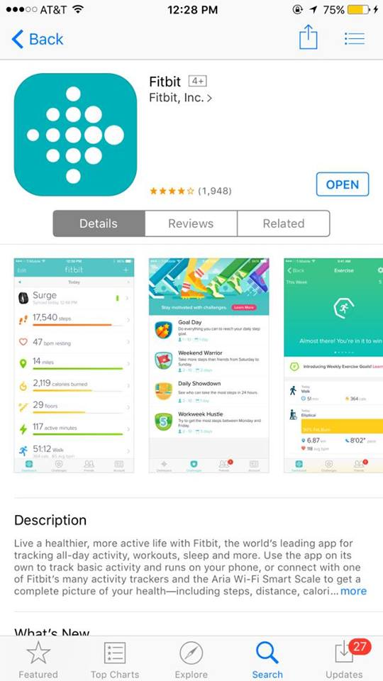
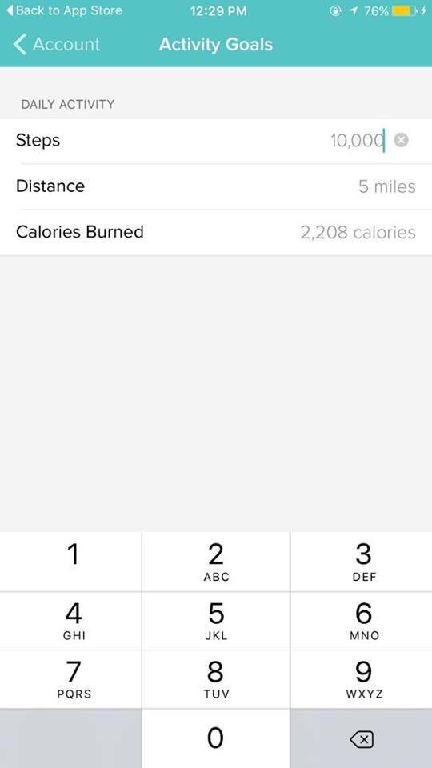

People without health insurance, in poverty, or who earn minimum wage have essentially no medical attention. 70% of Americans require prescription drugs and 16,000 people in the Alameda County are homeless, and many more have no access or means to hospitals. Take a STEP forward and feel great about helping your community in a simple, but impactful way.
1. Register for an account on Fit to Fight 2. Download the FitBit App on your smartphone  3. Set up a Daily Step Goal  4. Link your Fitbit and Paypal accounts to Fit to Fight For every 1,000 steps you're under your step goal, $1.00 will be deducted from your Paypal. For every 10,000 steps you walk, a local clinic will donate a free consultation or a pharmacy will donate a free prescription refill for Alameda County residents in need.